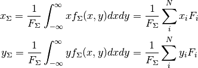
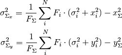

gaussian_sum_moments¶
- gammapy.morphology.gaussian_sum_moments(F, sigma, x, y, cov_matrix, shift=0.5)[source]¶
Compute image moments with uncertainties for sum of Gaussians.
The moments are computed analytically, the formulae are documented below.
Calls uncertainties.correlated_values to propagate the errors.
Parameters: F : array
Integral norms of the Gaussian components.
sigmas : array
Widths of the Gaussian components.
x : array
x positions of the Gaussian components.
y : array
y positions of the Gaussian components.
cov_matrix : array
Covariance matrix of the parameters. The columns have to follow the order: [sigma_1, x_1, y_1, F_1, sigma_2, x_2, y_2, F_2, ..., sigma_N, x_N, y_N, F_N]
shift : float (default = 0.5)
Depending on where the image values are given, the grid has to be shifted. If the values are given at the center of the pixel shift = 0.5.
Returns: nominal_values : list
List of image moment nominal values: [F_sum, x_sum, y_sum, x_sigma, y_sigma, sqrt(x_sigma * y_sigma)]
All values are given in pixel coordinates.
std_devs : list
List of image moment standard deviations.
Notes
The 0th moment (total flux) is given by:

The 1st moments (position) are given by:

The 2nd moments (extension) are given by:

Examples
A simple example for an image consisting of three Gaussians with zero covariance matrix:
>>> import numpy as np >>> from gammapy.morphology.gauss import gaussian_sum_moments >>> cov_matrix = np.zeros((12, 12)) >>> F = [100, 200, 300] >>> sigma = [15, 10, 5] >>> x = [100, 120, 70] >>> y = [100, 90, 120] >>> nominal_values, std_devs = gaussian_sum_moments(F, sigma, x, y, cov_matrix)